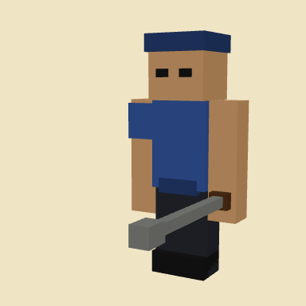
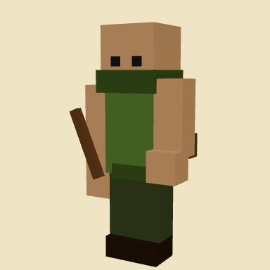
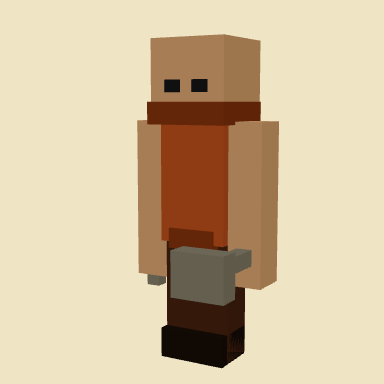
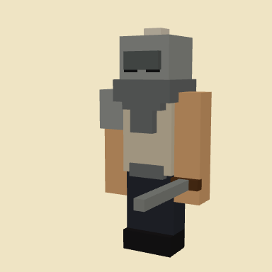
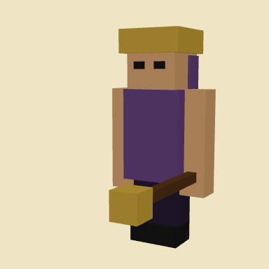

Play, then click the island so the mouse locks. WASD or arrows to fly, space up, shift down. Escape unlocks the mouse.
Minigames
Castle defense
You fly a camera over a small island, spend gold on walls and buildings around the keep, train troops, then start ten waves from the shore. It’s the third game on the minigames hub, next to Neon Clash and Mini 8-Ball.
The game
The island
One map. Keep in the middle, grass and trees around it, beach and rocks at the edge. Enemies don’t use a single lane. They spawn in the shallows all around the island and walk inland.

Troops
Click a barracks and pick a type. They spawn as a squad and walk to the rally point in front of the building. Spearman and slinger are cheap filler (8 and 6 per click). Raiders are faster. Knights cost 28 gold and only come in threes, but they take a beating. Wardens are the expensive ranged ones. Drag a box to select, click the ground to send them. They path through your own walls on purpose, otherwise a closed ring traps them.





Gold and buildings
You start with 360 gold. Farms cost 50 and pay 1.5 gold per second; you can only have six. During setup gold is capped at 540, so sitting still doesn’t stockpile a huge bank. Walls are drawn as a line (10 gold). The bar at the bottom is wall, crossbow, cannon, mage tower, air defense, spike pit, farm, barracks, workshop. The workshop repairs nearby walls and is required before you can upgrade troops. Click a placed building to sell it. You get the full cost back.
Waves
Hit Start waves when the layout is good enough. There are ten. Wave 1 is only goblins. Later waves add runners, archers, brutes, bats (they fly over walls, so air defense matters), climbers, rams that smash palisades, and an ogre on 9 and 10. They path to the keep. If they break through a wall they keep chewing the next segment instead of running past to the farms. The keep starts at 400 HP; click it to spend gold and upgrade Keep → Fort → Castle → Citadel. If keep HP hits 0 you lose. Survive wave 10 and you win. Kills give gold, and farms keep paying during the fight.
How I built it
I added it to the hub next to the other two games. For a while it was only the island, the keep, and a camera you could fly around. Then gold and placing stuff: farms, towers, walls you drag as a line on the grass. The match itself came after that — enemies spawning in the water, walking to the keep, ten waves, a win/lose screen.
Troops were not in the first versions. Barracks, drag-select, click to move. They used to slide; now they walk. Friendly units are the small knight models, enemies are green. After it was already playable I added the workshop (repairs + troop upgrades), mage towers, spike pits, air defense, bats/climbers/rams, and rebuilt the palisades so they don’t look hollow from inside the ring.
Controls
Number keys 1–9 match the hotbar. Click to place. For walls, click once, drag, click again. G toggles a gate in the wall tool. Q cancels the current tool, or clears the troop selection if you aren’t holding one.
Click a barracks, pick a unit. Drag a box around troops, click ground to move. E selects everyone still alive. Housing is 20 per barracks, so you run out of space unless you build another one.
Gold, army count, wave, and keep health are at the top. Click a building in the world to inspect, sell, or (on barracks/workshop) train and upgrade.